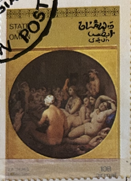
| SOURCE | TITLE| IMAGE MATCH | click to source page |
| IMDb | Les voraces (1973) - Photos - IMDb | 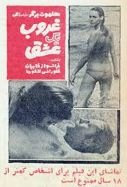 |
| IMDb | The Married Man (1973) - IMDb | 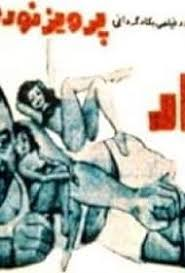 |
| نشر دنا | دنیای ما و شاه هلند Donya ye ma va Shah-eHolland - نشر دنا | 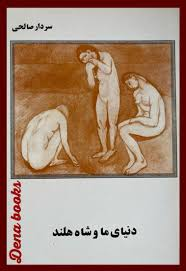 |
| Ketab Corporation | Books | نويسنده: میرآفتابی، مرتضی | Ketab Corp | شرکت کتاب | 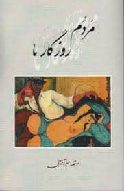 |
| نشر دنا | سردار صالحی Archives - نشر دنا | 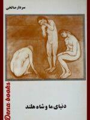 |
| مكتبة نور | download book history atla and raneh the last king of bani siraj authored by chateaubriand pdf - Noor Library | 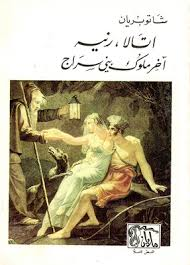 |
| eBay | مجلة الشبكة قديمة Chabaka Achabaka #685 Arabic Lebanese Magazine 1969 | eBay | |
| Ketab Corporation | Books | Author: yaheri, m | Ketab Corp | شرکت کتاب | |
| نشر دنا | His Shirin and others Archives - نشر دنا | 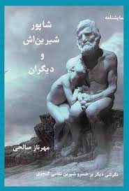 |
| Pinno | جادویی on Pinno | 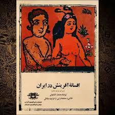 |
| ketab.com | rezai asl, david: adam va hava va 25 dastane digar | Ketab Corp رضایی اصل، داوید : آدم و حوا و 25 داستان دیگر | شرکت کتاب | 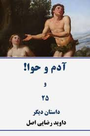 |
| didavarbook.com | کتاب اتهام به خود (تجربههاي كوتاه 9) نمايشنامه اثر پتر هاندكه|فروشگاه اينترنتي كتاب ديدآور | خرید آنلاین کتاب | |
| Internet Archive | فاوست گوته : فاوست گوته : Free Download, Borrow, and Streaming : Internet Archive | |
| ketabsara.co | هنر مردن - فروشگاه اینترنتی کتاب سرا | |
| روزنامه دنیای اقتصاد | مردن | 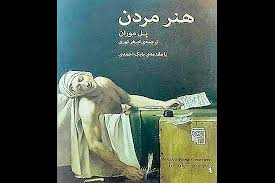 |
| سجاد سلیمانی | Index of /wp-content/uploads/2024/09/ | 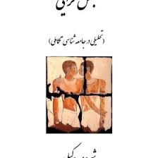 |
| کتابفروشی چتر | هنر مردن | |
| Ketab Corporation | Books | Author: steinmann, jean | Ketab Corp | شرکت کتاب | 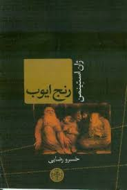 |
| مكتبة نور | تحميل كتاب history اتلا ورنه آخر ملوك بني سراج تأليف شاتوبريان pdf - مكتبة نور | 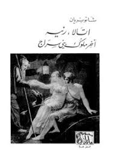 |
| Scribd | Chistiye Honar | PDF | 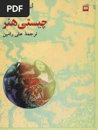 |
| Ketab Corporation | Books | نويسنده: الیاسی، عباس | Ketab Corp | شرکت کتاب | |
| Alfurat Website | Book - وعلى الدنيا السلام - Alfurat Website | |
| Ketab Corporation | huston, nancy: sazhaye zolmani | Ketab Corp هوستون، نانسی : سازهای ظلمانی | شرکت کتاب | |
| باسلام | خرید و قیمت کتاب فلسفه سیاسی نشر کتاب طه از غرفه شرکت ایده بوک | 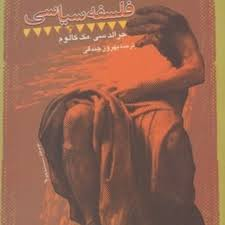 |
| Adnan Al-Zubaidy (@adnan.al.zubaidy) • Instagram photos and videos | 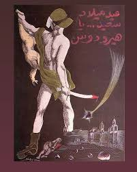 | |
| Goodreads | Popular سفر نامه و زندگی نامه Books | 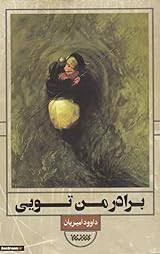 |
| Ketab Corporation | Books | نويسنده: معين زاده ، هوشنگ | Ketab Corp | شرکت کتاب | 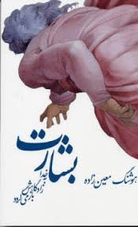 |
| Digital Library of the Middle East | Rah-i Azadi (96) - Digital Library of the Middle East - DLME | 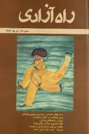 |
| محسن پزشكيان Mohsen Pezeshkian | 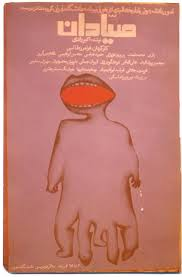 | |
| ShopiPersia | Human Acts Novel by Han Kang (Farsi) - ShopiPersia | 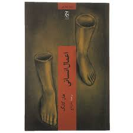 |
| انتشارات چاپخش | پل موران – انتشارات چاپخش | 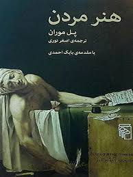 |
| Flickr | a al Hosani | Flickr | 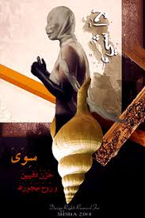 |
| Ketab Corporation | thumbnail.aspx?img=6482&cat=Books&typ=A&width=220 | |
| Discogs | دلکش – ای کاش نمیدیدم ترا / دیگر نمیخواهم – Vinyl (7"), [r12986623] | Discogs | 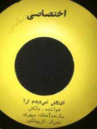 |
| The University of Manchester | Firdusi (6) - Nashriyah: digital Iranian history آرشیو آنلاین نشریات دانشگاه منچستر | 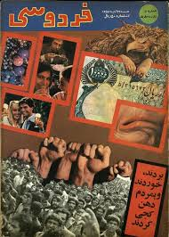 |
| Apnaorg | Shahmukhi eBooks | 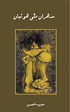 |
| Dreamstime.com | 9,417 State Stamp Stock Photos - Free & Royalty-Free Stock Photos from Dreamstime | 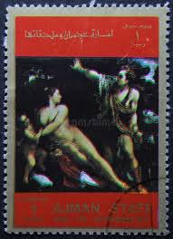 |
| morour.org | کتاب «هنر مردن» نوشته پل موران به تازگی با ترجمه اصغر نوری توسط نشر مرکز منتشر و راهی بازار نشر شده است - مرور | بررسی ادبیات معاصر ایران و جهان | 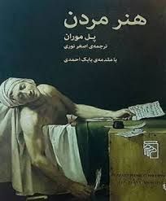 |
| m bata (mahmudbata) - Profile | Pinterest | 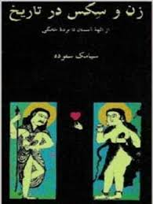 | |
| QuranWaHadith | Khair e Kaseer, خیر کثیر | تنقیدی و اصلاحی مضامین | ایلاف خیری | | 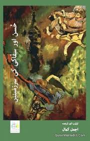 |
| Scribd | بعضی از کهن ترین آثار نثر فارسی تا پایان قرن چهارم هجری - غلامحسین صدیقی | PDF | 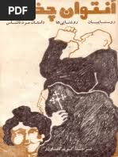 |
| خانه کتاب و ادبیات ایران | واژهنامه-عمومی-هنر | سیمای-دانش | خانه کتاب و ادبیات ایران | 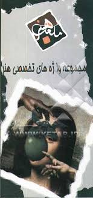 |
| Proshot Kalami | Proshot Kalami | 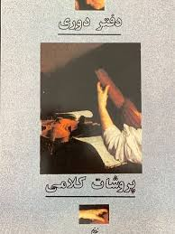 |
| ketab.com | Books | Author: hyde, maggie | Ketab Corp | شرکت کتاب | |
| IMDb | Kandahar (2001) | |
| Dreamstime.com | Isolated Ajman State Stamp editorial image. Image of hobby - 377899085 | 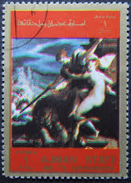 |
| خانه کتاب و ادبیات ایران | نمایشگاه مجازی - کتابها | 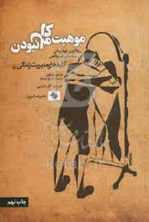 |
| کتابناک | دانلود کتاب Philosophy Of Plotinus | 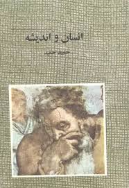 |
| Goodreads | كراسة كانون by محمد خضير | Goodreads | 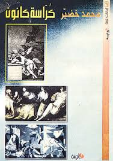 |
| torob.com | خرید و قیمت کتاب آوازهایی برای گله گنجشک ها | ترب | 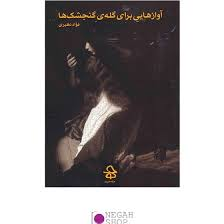 |
| Exotic India Art | Books authored by Sultana Iman | 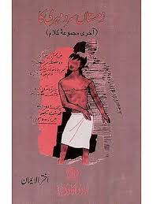 |
| Amazon Web Services | ھفتيوار ھدايت (1984، جلد 16، شمارو 25-26) | 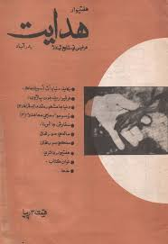 |
| Blogger.com | Human Scandals by Brad Holland - ECC Cartoonbooks Club | 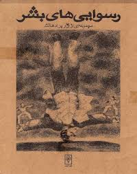 |
| Exotic India Art | زمستاں سرد مہری کا: آخری مجموعه کلام- Zamistan Sard Mehri Ka: Akhtar-Ul-Iman: Last Poetic Collection in Urdu | Exotic India Art | 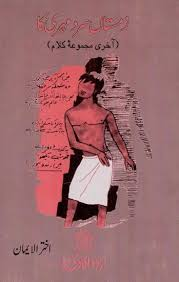 |
| Pinno | ویولن on Pinno | |
| Pinno | پادکست on Pinno | 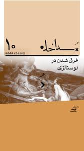 |
| ahmedmorsi.com | Publications — Ahmed Morsi | 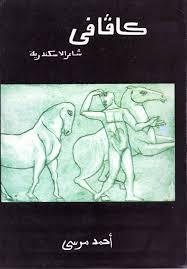 |
| Braichposters | مجلة أخر ساعة Umm Kulthum Article أم كلثوم Akher Saa Arabic Egypt Maga – Braichposters | 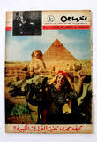 |
| قلم زون | انجي كروسمان| قلم زون | 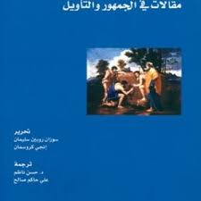 |
| ketab.com | amiri, natasha: ba man be jahannam bia | Ketab Corp اميری، ناتاشا : با من به جهنم بيا | شرکت کتاب |